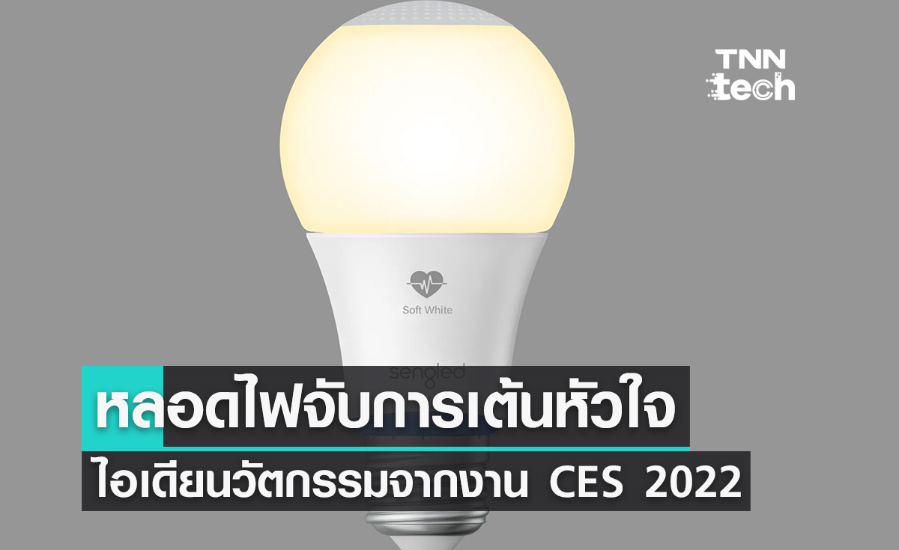

Introductions แนะนำ
จะเป็นอย่างไรถ้าหลอดไฟในบ้าน สามารถตรวจจับการเต้นของหัวใจเราได้ด้วย? ล่าสุดในงาน CES 2022 หรืองานที่บรรดาบริษัทเทคโนโลยีจะขนผลิตภัณฑ์ใหม่ ๆ มาจัดแสดงกันประจำปี ได้มีการนำเสนอไอเดียหลอดไฟดังกล่าว ชื่อว่า "หลอดไฟอัจฉริยะ Smart Health Monitoring" โดยบริษัทผู้พัฒนา "Sengled"
